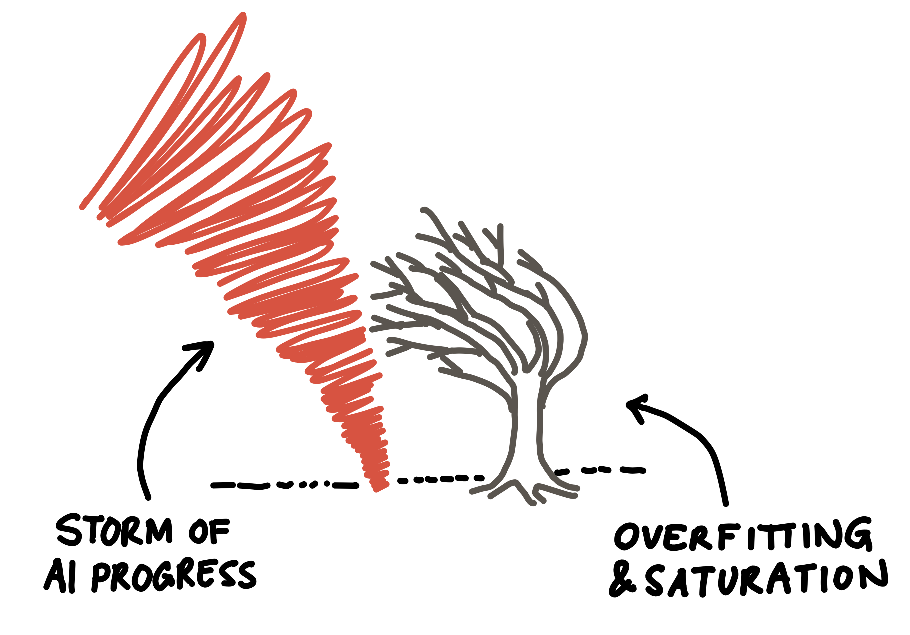
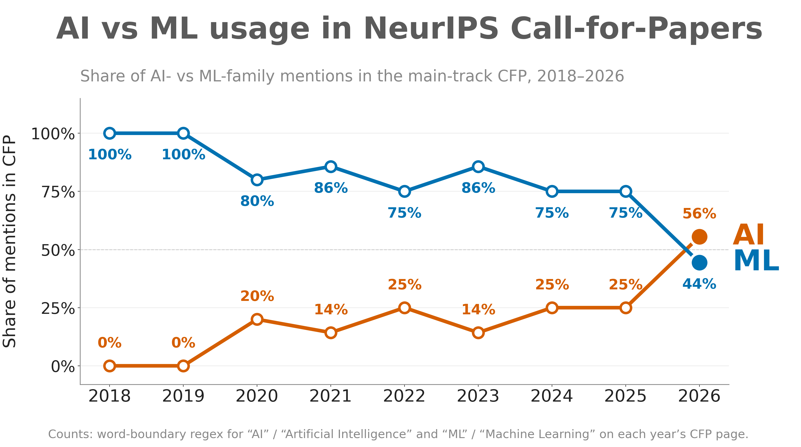
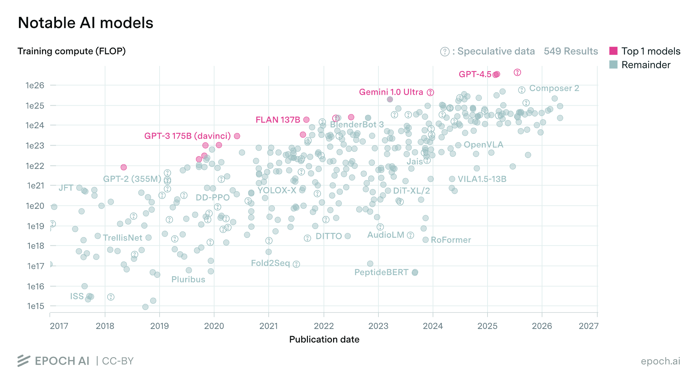
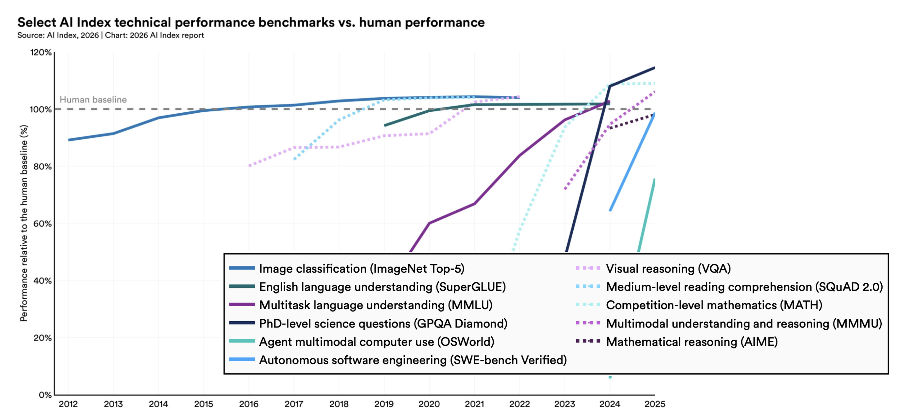
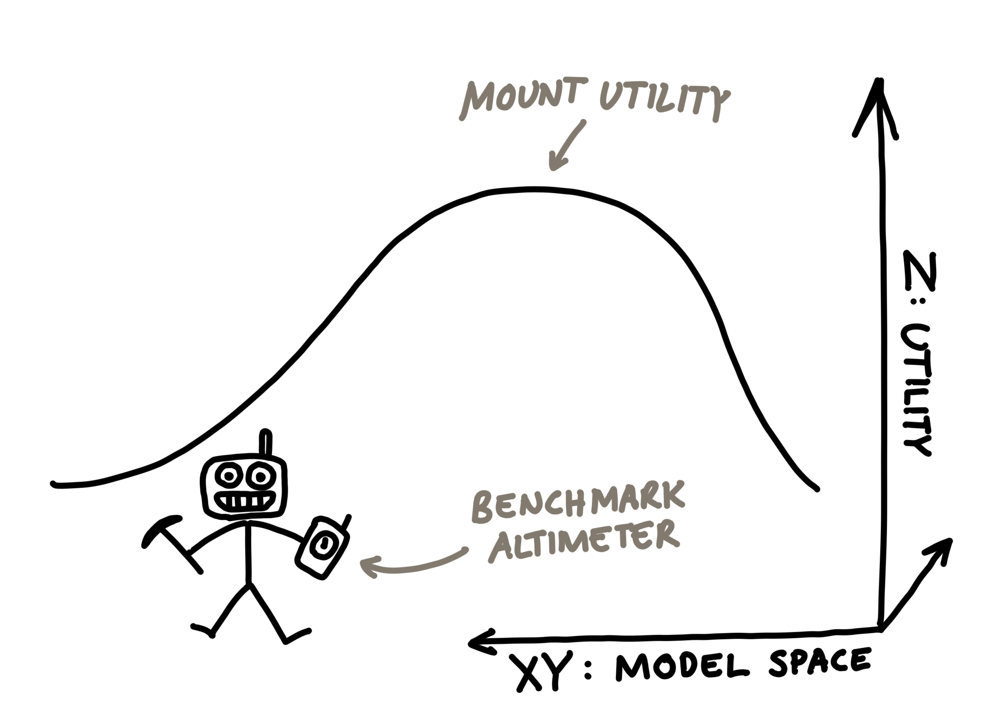
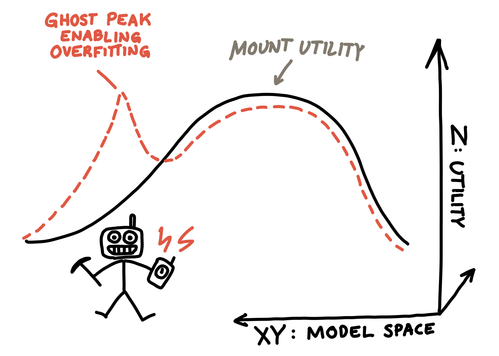
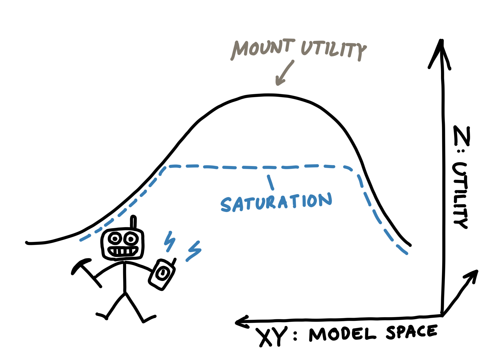

This post is based on a talk I gave at the NLIP Seminar Series at the CS Department in Cambridge.
AI evolves rapidly: top models are superseded by the next generation within months, if not weeks. Alongside models, the benchmarks aiming to measure them also see rapid turnover. Having started working with AI over eight years ago, I have felt this constant change first-hand, most intensely when I had to pivot research direction mid-PhD. Yet, throughout my experience, two fundamental challenges of evaluation have remained surprisingly persistent: overfitting and saturation. In this post, I share a visual explanation of these challenges and go through how attempts to solve them have failed so far (and likely will continue to fail). To me, these persistent challenges provide a little predictability within the constant storm that is AI progress. Perhaps they can do that for you too!

Persistent challenges: overfitting and saturation are like a resilient tree in the storm of AI progress.
Intro: A short history of AI
My very personal experience of rapid AI progress. In 2018, I first started in AI and training my first neural network. Things looked quite a bit different back then: the field was still largely called machine learning and most models were still pretty small, millions rather than billions of parameters. Support vector machines and random forests were still popular. LSTMs and CNNs were the most widely taught neural network architectures, whilst transformers were still relatively unknown (the Attention Is All You Need paper came out in mid-2017). As we all know, things in the field have shifted a little since 2018.
Change 1: Name. Most superficially, the name of the field effectively changed: from machine learning (ML) to artificial intelligence (AI). As the capabilities of neural network-based systems improved, the term AI became more acceptable. Fun fact: 2026 was the first year that the term AI was used more than ML in the NeurIPS Call-for-Papers (CFP) (see figure below). Yet, on its own, this name change would not quite justify the description “storm of AI progress”.

Relative usage of the terms AI vs ML since 2018 in NeurIPS Call-for-Papers. Generated with Claude Code.
Change 2: Training compute. More substantially than naming, the amount of training compute used for state-of-the-art models has increased significantly since 2018, by multiple orders of magnitude (~10,000x, see figure below). Importantly, the training compute of the average AI model in use has likely increased even more significantly, though exact numbers are challenging to get. Many users now access AI models via APIs to rent GPUs by-the-token, allowing them to run far bigger models than they could afford to buy hardware for.

Training compute in FLOPs for notable AI models. Generated with Epoch AI's great visualisation tool.
Change 3: Model capabilities (and alongside evals). Perhaps most importantly for real-world impact, models have just gotten much, much better at all sorts of capabilities. Most tasks that were considered challenging goals for AI in 2018 are long (mostly) solved, e.g. translation, image tagging or code completion. Over the last 8 years, we have seen benchmark after benchmark become saturated: ImageNet, SuperGLUE, MMLU, GPQA Diamond, OSWorld, SWE-Bench, VQA, SQuAD, MATH, MMMU … and so many more. These saturated benchmarks are no longer able to meaningfully distinguish state-of-the-art models.

Increasing performance of AI models on various benchmarks: from image classification to autonomous software engineering. Figure adapted from HAI Stanford's 2026 AI Index Report.
Challenges weathering the storm
So far, I have established the uncontroversial observation that there have been rapid changes in AI over the last years. This post is about the opposite, two aspects of AI development that have persisted. Specifically, two long-standing challenges of AI evaluation: overfitting and saturation. Despite significant research effort to address them, both have stayed around. In this post, I argue that this persistence is not a historical accident but rather can be explained by fundamental limitations of the process of AI development and the nature of AI evaluation.
Background: AI development as hillclimbing
First, we need a bit of context. I personally find the perspective of AI development as a collective hillclimbing exercise very helpful: developers train models to “climb” up in terms of some form of utility function (user, economic, etc.). The goal of developers is to build models that reach higher and higher utility levels, “climbing” up a figurative Mt Utility, illustrated below. The exact nature of the hill is usually not well-defined and changes but the notion of “some” hill being climbed is common amongst researchers working on frontier AI.

AI development as hillclimbing. The goal of AI development can be seen as finding the model that maximizes utility (climbs "Mt Utility" most effectively). Utility itself is not directly measurable, instead developers use benchmarks to estimate a model's utility: they serve as a sort of altimeter on the ascent up Mt Utility.
Benchmarks. In practice, directly measuring the “altitude” (i.e. utility level) of a model on this Mt Utility is either difficult or impossible. Instead, developers have to rely on benchmarks as a proxy measure. A benchmark is a software+data package that aims to measure a specific model property related to utility (in most cases), such as coding, math or writing skills. Capabilities are evaluated through a set of test cases, each with a clear instruction to the model as well as a method of assessing its output. For example, the popular SWE-Bench benchmark (Jimenez et al., 2024 Jimenez, C., Yang, J., Wettig, A., Yao, S., Pei, K., Press, O. & Narasimhan, K. (2024). SWE-bench: Can Language Models Resolve Real-world Github Issues?. Retrieved from https://openreview.net/forum?id=VTF8yNQM66 ) captures a model’s coding skills with test cases built from GitHub issues and unit-test-based verification. What such benchmarks measure is a model’s ability to solve a small set of specific coding tasks, commonly used as a proxy for coding capabilities, and user utility more generally.
Creating a utility altimeter. In the context of training general-purpose LLMs, many benchmarks are aggregated to approximate overall utility across diverse use-cases. Combined, benchmarks provide model developers a clear and actionable objective to optimize against. During training, developers frequently query their benchmarks to determine progress. Here, benchmarks serve as a form of utility altimeter that indicates whether algorithm or data changes improved downstream model utility. Benchmarks are not a map: they don’t directly tell developers where to go, but given a model benchmarks can tell where they are (at least roughly). If we were to use Terminal-Bench (Merrill et al., 2026 Merrill, M., Shaw, A., Carlini, N., Li, B., Raj, H., Bercovich, I., Shi, L., Shin, J., Walshe, T., Buchanan, E., Shen, J., Ye, G., Lin, H., Poulos, J., Wang, M., Nezhurina, M., Lu, D., Menis Mastromichalakis, O., Xu, Z., Chen, Z., Liu, Y., Zhang, R., Chen, L., Kashyap, A., Uslu, J., Li, J., Wu, J., Yan, M., Bian, S., Sharma, V., Sun, K., Dillmann, S., Anand, A., Lanpouthakoun, A., Koopah, B., Hu, C., Guha, E., Dreiman, G., Zhu, J., Krauth, K., Zhong, L., Muennighoff, N., Amanfu, R., Tan, S., Pimpalgaonkar, S., Aggarwal, T., Lin, X., Lan, X., Zhao, X., Liang, Y., Wang, Y., Wang, Z., Zhou, C., Heineman, D., Liu, H., Trivedi, H., Yang, J., Lin, J., Shetty, M., Yang, M., Omi, N., Raoof, N., Li, S., Zhuo, T., Lin, W., Dai, Y., Wang, Y., Chai, W., Zhou, S., Wahdany, D., She, Z., Hu, J., Dong, Z., Zhu, Y., Cui, S., Saiyed, A., Kolbeinsson, A., Rytting, C., Marten, R., Wang, Y., Jitsev, J., Dimakis, A., Konwinski, A. & Schmidt, L. (2026). Terminal-Bench: Benchmarking Agents on Hard, Realistic Tasks in Command Line Interfaces. Retrieved from https://proceedings.iclr.cc/paper_files/paper/2026/hash/444a3737adaee10d86ad2ef5f74468e6-Abstract-Conference.html ) (v2.1) as our altimeter, then Claude Opus 5 would be highest at an altitude of 89%, followed by Fable 5 at 87% and GPT-5.6 Sol at 83% (Artificial Analysis, 2026 Artificial Analysis(2026, 8/20). Retrieved from https://artificialanalysis.ai/agents/coding-agents?coding-agents-performance-chart=benchmark-score-by-eval#coding-agents-performance-chart-tabs ). Many recent model cards include this score, so this benchmark is a currently influential altimeter.
Challenge 1: Overfitting
Yet, like real altimeters, the utility estimates of benchmarks can be broken and give false readings. Benchmarks’ reliance on test cases causes fundamental issues: models can focus on the specific test cases without generalizing to high-level capabilities. For example for SWE-Bench, a model can be good at solving a fixed set of known GitHub issues without being much help on new issues. This opens up a second peak on our benchmark objective function, much quicker to climb but without generalisation beyond the benchmark’s test cases. In our hillclimbing analogy, this means our benchmark altimeter has ghost peaks: peaks of our benchmark score that do not correspond to real-world utility spikes (often the opposite!). Zhang et al. (2024 Zhang, H., Da, J., Lee, D., Robinson, V., Wu, C., Song, W., Zhao, T., Raja, P., Zhuang, C., Slack, D., Lyu, Q., Hendryx, S., Kaplan, R., Lunati, M. & Yue, S. (2024). A Careful Examination of Large Language Model Performance on Grade School Arithmetic. https://doi.org/10.52202/079017-1485 ) demonstrated heavy overfitting on the previously popular GSM8k benchmark: some models performed well on the publicly available math questions of GSM8k but failed on roughly equivalent previously unseen questions. The results indicate that some models mimicked a lookup table (the ghost peak) more than a general math solver (the real utility peak).

Ghost peaks enable overfitting. Benchmarks are imperfect utility altimeters. There are areas of model space where the benchmark scores highly (red) but real-world utility is much lower (black).
Mitigations. Many have tried to prevent these ghost peaks, none have fully solved the problem.
- Hidden benchmarks. If you train a model on benchmark data, that is often almost like giving the model a map leading it directly up a ghost peak. Because most benchmarks have ghost peaks that lead to rapid increase in score without real-world utility increases, any gradient descent-based method will generally quickly go up such peaks with direct data access. Thus, a simple way to reduce the likelihood of ending up with a model on a ghost peak is to hide the benchmark from developers training models. However, if used to select model candidates, even without access during training, benchmarks apply selection pressure on models. In such a scenario, the mechanism is more evolutionary rather than direct gradient-based optimization. Model developers will use benchmark scores as a selection criterion for candidate models. Thus, if ghost peaks exist (which they likely do), they are likely to be found eventually (albeit slower than with direct training). Benchmarks can’t escape Goodhart’s law: once a measure becomes a target it ceases to be a good measure (paraphrased). Hidden benchmarks are unable to truly mitigate selection pressure effects.
- Increasing benchmark size. A straightforward mitigation proposed by some is to simply increase the scale of the number of test cases (e.g. HELM or BIG Bench). However, as long as the test set is finite and fixed, it is possible to construct a non-generalizing model that performs well (I have not come across a counter-example yet). For example, for any benchmark with fixed correct answers, a simple answer look-up model suffices to achieve top performance. Size alone cannot change the fundamental issue of ghost peaks.
- Dynamic test case generation. Yet another alternative approach is to dynamically generate test cases, as done by Dynabench (Kiela et al., 2021 Kiela, D., Bartolo, M., Nie, Y., Kaushik, D., Geiger, A., Wu, Z., Vidgen, B., Prasad, G., Singh, A., Ringshia, P., Ma, Z., Thrush, T., Riedel, S., Waseem, Z., Stenetorp, P., Jia, R., Bansal, M., Potts, C. & Williams, A. (2021). Dynabench: Rethinking Benchmarking in NLP. Association for Computational Linguistics. https://doi.org/10.18653/v1/2021.naacl-main.324 ) and Arena (Chiang et al., 2024 Chiang, W., Zheng, L., Sheng, Y., Angelopoulos, A., Li, T., Li, D., Zhu, B., Zhang, H., Jordan, M., Gonzalez, J. & Stoica, I. (2024). Chatbot Arena: An Open Platform for Evaluating LLMs by Human Preference. PMLR. Retrieved from https://proceedings.mlr.press/v235/chiang24b.html ). This setup removes the possibility of learning-by-heart ghost peaks: there is no way to learn a theoretically infinite set of test cases by heart. Nevertheless, there may be ghost peaks. The first failure mode introducing ghost peaks is if there are any shortcuts to solving tasks introduced by the test case assessment method. For example, for Arena focusing on response style rather than substance allowed some models to boost their scores without matching real-world utility (see my post on the well-known Llama-4-Maverick case here). The assessment method based on human annotations was susceptible to style bias. The second failure mode occurs if the test case distribution is different from the real-world distribution. Then, the resulting utility estimates also fail to estimate real-world utility. For Arena, likely both failure modes apply to some extent: the human assessment method is biased (Li et al., 2024 Li, T., Angelopoulos, A. & Chiang, W. (2024). Does style matter? Disentangling style and substance in Chatbot Arena. Retrieved from https://lmsys.org/blog/2024-08-28-style-control ) and the distribution of usage on Arena does not perfectly match real-world usage. Possible causes of distributional differences include web vs local app usage, free vs paid usage, and similar.
In conclusion, whenever it is possible to perform well on a benchmark without matching real-world utility, overfitting can (and likely will) occur. At least so far, this observation has held empirically across all popular benchmarks old enough to have applied selection pressure on models. Ultimately, if a benchmark is an efficient (and lossy) compression of real-world utility, a benchmark will always have some flaws that can be exploited. And the hillclimbing optimization of the AI community will reveal these (sooner or later). The only known way to avoid overfitting to a specific benchmark is to never let any developers see their models’ benchmark scores (or those of similar benchmarks!). Then, no optimization pressure can be applied to the model. However, such a level of secrecy of course defeats the purpose of many (if not most) benchmarks.
Challenge 2: Saturation
Beyond showing ghost peaks, the altimeter formed by benchmarks can exhibit a second class of issues: saturation. Benchmark altimeters have a limited operating range: below and above certain levels of utility the benchmark is no longer able to provide any helpful readings. Outside that range, all models score the same value. New models may indeed provide significant real-world utility but an old benchmark altimeter will still show the same level of utility. The reachable maximum often won’t be literally “100%” performance, but perhaps 96% where the remaining 4% are impossible or broken test cases. This saturation represents the last step in a constant cycle: (1) benchmark gets released, (2) models start to improve on the benchmark, and (3) benchmark becomes saturated (models converge in terms of benchmark performance). As a consequence, none of the benchmarks that people looked at when I started my AI journey in 2018 remain relevant today. Just looking at a recent model score card by Anthropic, we see that the oldest benchmark they share results on was just a bit over a year old. Benchmarks have incredibly short shelf-lives these days.

Saturation. Once models reach a certain capability level, the benchmark altimeters go outside their operating range and can no longer indicate if progress is being made.
Mitigations. As with overfitting, there have been many attempts to solve saturation, none fully solving the issue.
- Create really hard tasks. A straightforward way to pre-emptively avoid future saturation, is to simply pick really challenging tasks. History has shown that even supposedly hard tasks get solved fairly quickly. SuperGLUE (Wang et al., 2019 Wang, A., Pruksachatkun, Y., Nangia, N., Singh, A., Michael, J., Hill, F., Levy, O. & Bowman, S. (2019). SuperGLUE: A Stickier Benchmark for General-Purpose Language Understanding Systems. Retrieved from https://proceedings.neurips.cc/paper_files/paper/2019/hash/4496bf24afe7fab6f046bf4923da8de6-Abstract.html ) tried to create a much more challenging version of the GLUE benchmark (Wang et al., 2018 Wang, A., Singh, A., Michael, J., Hill, F., Levy, O. & Bowman, S. (2018). GLUE: A multi-task benchmark and analysis platform for natural language understanding. Retrieved from https://aclanthology.org/W18-5446/ ), SQuAD 2.0 (Rajpurkar et al., 2018 Rajpurkar, P., Jia, R. & Liang, P. (2018). Know What You Don’t Know: Unanswerable Questions for SQuAD. https://doi.org/10.48550/arXiv.1806.03822 ) did the same for SQuAD (Rajpurkar et al., 2016 Rajpurkar, P., Zhang, J., Lopyrev, K. & Liang, P. (2016). SQuAD: 100,000+ Questions for Machine Comprehension of Text. Association for Computational Linguistics. https://doi.org/10.18653/v1/D16-1264 ), MMLU-Pro (Wang et al., 2024 Wang, Y., Ma, X., Zhang, G., Ni, Y., Chandra, A., Guo, S., Ren, W., Arulraj, A., He, X., Jiang, Z., Li, T., Ku, M., Wang, K., Zhuang, A., Fan, R., Yue, X. & Chen, W. (2024). MMLU-Pro: A More Robust and Challenging Multi-Task Language Understanding Benchmark. Advances in Neural Information Processing Systems, 37. 95266–95290. https://doi.org/10.52202/079017-3018 ) for MMLU (Hendrycks et al., 2021 Hendrycks, D., Burns, C., Basart, S., Zou, A., Mazeika, M., Song, D. & Steinhardt, J. (2021). Measuring Massive Multitask Language Understanding. Retrieved from https://openreview.net/forum?id=d7KBjmI3GmQ ). All of these benchmarks are now saturated, whether the “hard” or “easy” version. To keep up with model progress, not just the tasks within benchmarks but also the methods used to evaluate tasks have changed: from simple word-matching (e.g. MMLU (Hendrycks et al., 2021 Hendrycks, D., Burns, C., Basart, S., Zou, A., Mazeika, M., Song, D. & Steinhardt, J. (2021). Measuring Massive Multitask Language Understanding. Retrieved from https://openreview.net/forum?id=d7KBjmI3GmQ )) to human (e.g. Arena (Chiang et al., 2024 Chiang, W., Zheng, L., Sheng, Y., Angelopoulos, A., Li, T., Li, D., Zhu, B., Zhang, H., Jordan, M., Gonzalez, J. & Stoica, I. (2024). Chatbot Arena: An Open Platform for Evaluating LLMs by Human Preference. PMLR. Retrieved from https://proceedings.mlr.press/v235/chiang24b.html )) and AI judgement (e.g. LLM-as-a-Judge (Zheng et al., 2023 Zheng, L., Chiang, W., Sheng, Y., Zhuang, S., Wu, Z., Zhuang, Y., Lin, Z., Li, Z., Li, D., Xing, E., Zhang, H., Gonzalez, J. & Stoica, I. (2023). Judging LLM-as-a-Judge with MT-Bench and Chatbot Arena. Retrieved from https://proceedings.neurips.cc/paper_files/paper/2023/hash/91f18a1287b398d378ef22505bf41832-Abstract-Datasets_and_Benchmarks.html )). Nevertheless, once a benchmark provides a verifiable set of tasks to solve and receives sufficient attention, model developers are generally able to make quick progress. Anticipating the exact direction of this progress is challenging, making building benchmarks with a long shelf-life especially difficult.
- Collect tasks dynamically. In addition to tackling overfitting, dynamic task collection has also been proposed to avoid saturation. Recognizing that any benchmark with a fixed set of tasks is destined to saturate quickly, Kiela et al. (2021 Kiela, D., Bartolo, M., Nie, Y., Kaushik, D., Geiger, A., Wu, Z., Vidgen, B., Prasad, G., Singh, A., Ringshia, P., Ma, Z., Thrush, T., Riedel, S., Waseem, Z., Stenetorp, P., Jia, R., Bansal, M., Potts, C. & Williams, A. (2021). Dynabench: Rethinking Benchmarking in NLP. Association for Computational Linguistics. https://doi.org/10.18653/v1/2021.naacl-main.324 ) proposed the Dynabench platform to collect tasks dynamically, enabling the benchmark to adapt to find challenging tasks. In a similar spirit, Chatbot Arena (Chiang et al., 2024 Chiang, W., Zheng, L., Sheng, Y., Angelopoulos, A., Li, T., Li, D., Zhu, B., Zhang, H., Jordan, M., Gonzalez, J. & Stoica, I. (2024). Chatbot Arena: An Open Platform for Evaluating LLMs by Human Preference. PMLR. Retrieved from https://proceedings.mlr.press/v235/chiang24b.html ) (now Arena.ai) became a popular benchmark. However, the choice of selection process itself typically limits the scope of a benchmark. For example, Arena was originally built for comparing chatbots. The field eventually moved on towards autonomous agents, an aspect the original Arena benchmark couldn’t capture despite its dynamic nature. Accordingly, the organisation behind the Arena released new benchmarks specific to agent use-cases.
Conclusion: No end in sight
To understand why I don’t expect a benchmark resilient to overfitting and saturation anytime soon, it’s useful to consider what would need to be true for such a benchmark to exist.
Overfitting: The benchmark must have zero shortcuts to high altitude, it can only have peaks corresponding to real-world utility maxima. No such benchmark currently exists. There are benchmarks like Arena that have fewer obvious peaks, but (1) they still have some ghost peaks (see above for Arena), and (2) tend to increase in financial and time cost (Arena requires ~thousands of human trials for adding a single new model).
Saturation: In order to avoid saturation, a benchmark would need to fully anticipate future capabilities and use-cases, a notoriously difficult task. Further, current technology would need to be able to evaluate such future capabilities. So far it has not been possible to build benchmarks with such a degree of foresight and it seems unlikely that this will change anytime soon. Thus far, benchmarks have always needed to be adapted to adjust to new progress (e.g. with autonomous agents).
Whenever someone claims to have solved either overfitting or saturation “for good”, I would advise a high degree of scepticism. They may have mitigated the challenges to some extent, but it is unlikely that their solution is fully impervious to these issues. Otherwise, their benchmark is unlike all prior benchmarks.
Hope: the resilience of the benchmarking process
Whilst no individual benchmark so far managed to resist overfitting and saturation, the process of community-driven benchmarking has largely resisted overfitting and saturation thus far. The scientific process of generating benchmarks itself has been able to manage the challenges consistently across prior model generations. Whenever a benchmark becomes overfitted or saturated, the community has been able to respond with a new, better benchmark. In some application areas the community has struggled to create new benchmarks that meaningfully distinguish state-of-the-art models (e.g. creative writing), but so far there have always been some areas where we are still able to distinguish the higher-utility models from the previous generation (e.g. agentic coding). Should this benchmark generation process ever completely stop working, and we can’t effectively come up with any new benchmarks to replace outdated existing ones (in all areas), something fundamental will have changed about our relationship to AI. But that’s a topic for another post.
Acknowledgements. Big thanks to Constantin Kogler and Oli Woodman for their feedback on earlier versions of this post. Errors of course remain my own.
References
- Artificial Analysis(2026, 8/20). Retrieved from https://artificialanalysis.ai/agents/coding-agents?coding-agents-performance-chart=benchmark-score-by-eval#coding-agents-performance-chart-tabs
- Chiang, W., Zheng, L., Sheng, Y., Angelopoulos, A., Li, T., Li, D., Zhu, B., Zhang, H., Jordan, M., Gonzalez, J. & Stoica, I. (2024). Chatbot Arena: An Open Platform for Evaluating LLMs by Human Preference. PMLR. Retrieved from https://proceedings.mlr.press/v235/chiang24b.html
- Hendrycks, D., Burns, C., Basart, S., Zou, A., Mazeika, M., Song, D. & Steinhardt, J. (2021). Measuring Massive Multitask Language Understanding. Retrieved from https://openreview.net/forum?id=d7KBjmI3GmQ
- Jimenez, C., Yang, J., Wettig, A., Yao, S., Pei, K., Press, O. & Narasimhan, K. (2024). SWE-bench: Can Language Models Resolve Real-world Github Issues?. Retrieved from https://openreview.net/forum?id=VTF8yNQM66
- Kiela, D., Bartolo, M., Nie, Y., Kaushik, D., Geiger, A., Wu, Z., Vidgen, B., Prasad, G., Singh, A., Ringshia, P., Ma, Z., Thrush, T., Riedel, S., Waseem, Z., Stenetorp, P., Jia, R., Bansal, M., Potts, C. & Williams, A. (2021). Dynabench: Rethinking Benchmarking in NLP. Association for Computational Linguistics. https://doi.org/10.18653/v1/2021.naacl-main.324
- Li, T., Angelopoulos, A. & Chiang, W. (2024). Does style matter? Disentangling style and substance in Chatbot Arena. Retrieved from https://lmsys.org/blog/2024-08-28-style-control
- Merrill, M., Shaw, A., Carlini, N., Li, B., Raj, H., Bercovich, I., Shi, L., Shin, J., Walshe, T., Buchanan, E., Shen, J., Ye, G., Lin, H., Poulos, J., Wang, M., Nezhurina, M., Lu, D., Menis Mastromichalakis, O., Xu, Z., Chen, Z., Liu, Y., Zhang, R., Chen, L., Kashyap, A., Uslu, J., Li, J., Wu, J., Yan, M., Bian, S., Sharma, V., Sun, K., Dillmann, S., Anand, A., Lanpouthakoun, A., Koopah, B., Hu, C., Guha, E., Dreiman, G., Zhu, J., Krauth, K., Zhong, L., Muennighoff, N., Amanfu, R., Tan, S., Pimpalgaonkar, S., Aggarwal, T., Lin, X., Lan, X., Zhao, X., Liang, Y., Wang, Y., Wang, Z., Zhou, C., Heineman, D., Liu, H., Trivedi, H., Yang, J., Lin, J., Shetty, M., Yang, M., Omi, N., Raoof, N., Li, S., Zhuo, T., Lin, W., Dai, Y., Wang, Y., Chai, W., Zhou, S., Wahdany, D., She, Z., Hu, J., Dong, Z., Zhu, Y., Cui, S., Saiyed, A., Kolbeinsson, A., Rytting, C., Marten, R., Wang, Y., Jitsev, J., Dimakis, A., Konwinski, A. & Schmidt, L. (2026). Terminal-Bench: Benchmarking Agents on Hard, Realistic Tasks in Command Line Interfaces. Retrieved from https://proceedings.iclr.cc/paper_files/paper/2026/hash/444a3737adaee10d86ad2ef5f74468e6-Abstract-Conference.html
- Rajpurkar, P., Zhang, J., Lopyrev, K. & Liang, P. (2016). SQuAD: 100,000+ Questions for Machine Comprehension of Text. Association for Computational Linguistics. https://doi.org/10.18653/v1/D16-1264
- Rajpurkar, P., Jia, R. & Liang, P. (2018). Know What You Don’t Know: Unanswerable Questions for SQuAD. https://doi.org/10.48550/arXiv.1806.03822
- Wang, A., Singh, A., Michael, J., Hill, F., Levy, O. & Bowman, S. (2018). GLUE: A multi-task benchmark and analysis platform for natural language understanding. Retrieved from https://aclanthology.org/W18-5446/
- Wang, A., Pruksachatkun, Y., Nangia, N., Singh, A., Michael, J., Hill, F., Levy, O. & Bowman, S. (2019). SuperGLUE: A Stickier Benchmark for General-Purpose Language Understanding Systems. Retrieved from https://proceedings.neurips.cc/paper_files/paper/2019/hash/4496bf24afe7fab6f046bf4923da8de6-Abstract.html
- Wang, Y., Ma, X., Zhang, G., Ni, Y., Chandra, A., Guo, S., Ren, W., Arulraj, A., He, X., Jiang, Z., Li, T., Ku, M., Wang, K., Zhuang, A., Fan, R., Yue, X. & Chen, W. (2024). MMLU-Pro: A More Robust and Challenging Multi-Task Language Understanding Benchmark. Advances in Neural Information Processing Systems, 37. 95266–95290. https://doi.org/10.52202/079017-3018
- Zhang, H., Da, J., Lee, D., Robinson, V., Wu, C., Song, W., Zhao, T., Raja, P., Zhuang, C., Slack, D., Lyu, Q., Hendryx, S., Kaplan, R., Lunati, M. & Yue, S. (2024). A Careful Examination of Large Language Model Performance on Grade School Arithmetic. https://doi.org/10.52202/079017-1485
- Zheng, L., Chiang, W., Sheng, Y., Zhuang, S., Wu, Z., Zhuang, Y., Lin, Z., Li, Z., Li, D., Xing, E., Zhang, H., Gonzalez, J. & Stoica, I. (2023). Judging LLM-as-a-Judge with MT-Bench and Chatbot Arena. Retrieved from https://proceedings.neurips.cc/paper_files/paper/2023/hash/91f18a1287b398d378ef22505bf41832-Abstract-Datasets_and_Benchmarks.html
Citation
If you found this post useful for your work, please consider citing it as:
orFindeis, Arduin. (Aug 2026). Two surprisingly persistent challenges of AI evaluation. Retrieved from https://arduin.io/blog/persistent-eval-challenges/.
@article{Findeis2026TwosurprisinglypersistentchallengesofAIevaluation,
title = "Two surprisingly persistent challenges of AI evaluation",
author = "Findeis, Arduin",
journal = "arduin.io",
year = "2026",
month = "August",
url = "https://arduin.io/blog/persistent-eval-challenges/"
}